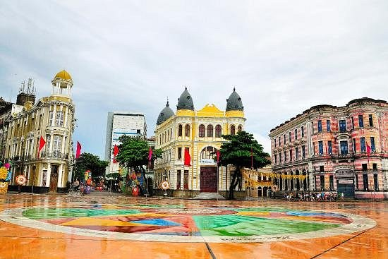

Sobre Recife
Recife é uma das cidades mais famosas do Nordeste do Brasil, conhecida por suas belas praias, rica história e cultura vibrante. Fundada em 1537, a cidade é um importante centro econômico e turístico da região.


Marco Zero
O Marco Zero está localizado no bairro do Recife Antigo e foi inaugurado em 1938. Este ponto turístico marca o início das estradas que partem da cidade e é cercado por edifícios históricos e atrações culturais.
